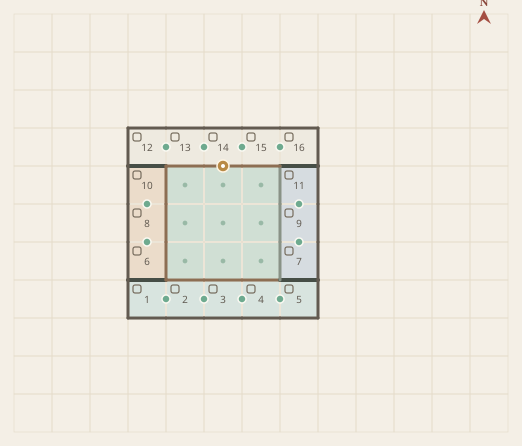
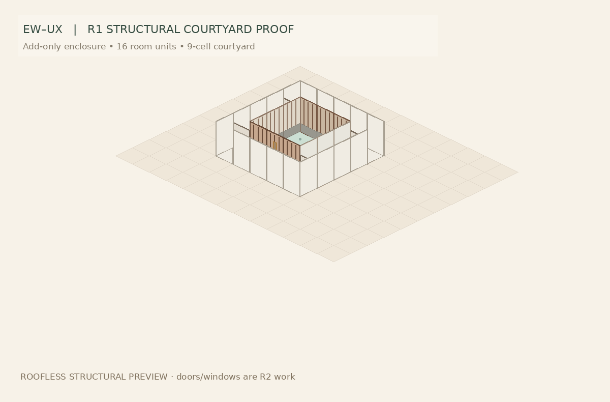

02 · 围合自动成院 — 从空场景逐步构建院落
平面建造视图 点击网格执行操作 · 北 ↑

粉色系低饱和色块为建造颜色。绿色小圆点代表持久连通边；深线为真实隔墙意图。
院内立面 · 结构剖开视角 2.5D 实体组织预览

世界北 +Z ↑
真实门窗孔洞、屋面水沟、跨度支撑与可施工的构造仍属 R2/R3，当前木格与门位仅作规则可视化。
室内连通公共隔墙围合庭院院内入口意图（非实体孔洞）
建造控制台0 / 0 步
空白大地
从空白大地出发，通过 Add / Recolor / Remove 构筑大空间、隔墙与院落。连续同色建立室内连通，建造顺序被保留；建筑闭环自动识别庭院，再按墙段角色分配木构、石脚与局部白墙的院内立面。这里展示的是可回放的结构研究，不是已完成的门窗实体模型。
02 · 围合自动成院 — 从空场景逐步构建院落

